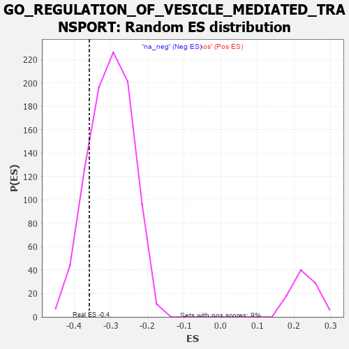

| | | Dataset | 7d |
| Phenotype | NoPhenotypeAvailable |
| Upregulated in class | na_neg |
| GeneSet | GO_REGULATION_OF_VESICLE_MEDIATED_TRANSPORT |
| Enrichment Score (ES) | -0.35861498 |
| Normalized Enrichment Score (NES) | -1.1911373 |
| Nominal p-value | 0.16207276 |
| FDR q-value | 0.6435724 |
| FWER p-Value | 1.0 |
Table: GSEA Results Summary
 Fig 1: Enrichment plot: GO_REGULATION_OF_VESICLE_MEDIATED_TRANSPORT
Fig 1: Enrichment plot: GO_REGULATION_OF_VESICLE_MEDIATED_TRANSPORT
Profile of the Running ES Score & Positions of GeneSet Members on the Rank Ordered List
| PROBE | GENE SYMBOL | GENE_TITLE | RANK IN GENE LIST | RANK METRIC SCORE | RUNNING ES | CORE ENRICHMENT | | 1 | SYT2 | | | 8 | 5.577 | 0.0734 | No |
| 2 | RAC2 | | | 60 | 2.442 | 0.0995 | No |
| 3 | FOXF1 | | | 176 | 1.136 | 0.0999 | No |
| 4 | NSF | | | 243 | 0.947 | 0.1042 | No |
| 5 | CNST | | | 317 | 0.792 | 0.1054 | No |
| 6 | DLL1 | | | 337 | 0.760 | 0.1131 | No |
| 7 | PLD1 | | | 381 | 0.716 | 0.1172 | No |
| 8 | LRP1 | | | 470 | 0.648 | 0.1146 | No |
| 9 | RINT1 | | | 1110 | 0.462 | 0.0391 | No |
| 10 | SRC | | | 1128 | 0.459 | 0.0431 | No |
| 11 | YIPF5 | | | 1406 | 0.409 | 0.0132 | No |
| 12 | P2RY1 | | | 1416 | 0.407 | 0.0175 | No |
| 13 | BACE1 | | | 1673 | 0.360 | -0.0104 | No |
| 14 | ABR | | | 1812 | 0.335 | -0.0236 | No |
| 15 | FMR1 | | | 1816 | 0.334 | -0.0195 | No |
| 16 | AP2S1 | | | 1846 | 0.329 | -0.0188 | No |
| 17 | BRSK2 | | | 1979 | 0.308 | -0.0316 | No |
| 18 | SNF8 | | | 2119 | 0.288 | -0.0455 | No |
| 19 | SYK | | | 2186 | 0.278 | -0.0502 | No |
| 20 | C2CD5 | | | 2204 | 0.276 | -0.0487 | No |
| 21 | REST | | | 2308 | 0.259 | -0.0584 | No |
| 22 | ANO6 | | | 2339 | 0.255 | -0.0588 | No |
| 23 | BTBD9 | | | 2407 | 0.245 | -0.0641 | No |
| 24 | NUMB | | | 2519 | 0.224 | -0.0753 | No |
| 25 | VPS4A | | | 2654 | 0.205 | -0.0897 | No |
| 26 | SCFD1 | | | 2783 | 0.185 | -0.1035 | No |
| 27 | FER | | | 2803 | 0.183 | -0.1035 | No |
| 28 | GOSR1 | | | 2940 | 0.159 | -0.1187 | No |
| 29 | RAB17 | | | 2950 | 0.157 | -0.1178 | No |
| 30 | RAB10 | | | 2952 | 0.157 | -0.1158 | No |
| 31 | SYT8 | | | 3115 | 0.135 | -0.1347 | No |
| 32 | MTMR2 | | | 3126 | 0.133 | -0.1342 | No |
| 33 | RAB4B | | | 3157 | 0.129 | -0.1363 | No |
| 34 | AP1G1 | | | 3210 | 0.121 | -0.1414 | No |
| 35 | BET1L | | | 3224 | 0.118 | -0.1414 | No |
| 36 | SNX17 | | | 3272 | 0.110 | -0.1460 | No |
| 37 | RAB8A | | | 3319 | 0.102 | -0.1505 | No |
| 38 | VPS16 | | | 3370 | 0.093 | -0.1556 | No |
| 39 | AAK1 | | | 3400 | 0.089 | -0.1581 | No |
| 40 | ATG3 | | | 3471 | 0.081 | -0.1660 | No |
| 41 | HGS | | | 3476 | 0.080 | -0.1654 | No |
| 42 | CDK5 | | | 3480 | 0.080 | -0.1648 | No |
| 43 | FES | | | 3501 | 0.077 | -0.1663 | No |
| 44 | MAPK3 | | | 3589 | 0.062 | -0.1766 | No |
| 45 | CBL | | | 3621 | 0.056 | -0.1798 | No |
| 46 | SYT11 | | | 3732 | 0.036 | -0.1933 | No |
| 47 | HTR1B | | | 3745 | 0.035 | -0.1944 | No |
| 48 | DGKQ | | | 3856 | 0.020 | -0.2082 | No |
| 49 | STX18 | | | 3962 | 0.000 | -0.2216 | No |
| 50 | TOR1A | | | 4030 | -0.013 | -0.2300 | No |
| 51 | ATG5 | | | 4051 | -0.016 | -0.2323 | No |
| 52 | ABL1 | | | 4125 | -0.027 | -0.2413 | No |
| 53 | SYT12 | | | 4172 | -0.037 | -0.2467 | No |
| 54 | AP2B1 | | | 4185 | -0.039 | -0.2477 | No |
| 55 | VPS11 | | | 4202 | -0.041 | -0.2492 | No |
| 56 | SAR1A | | | 4304 | -0.060 | -0.2613 | No |
| 57 | SYT17 | | | 4310 | -0.061 | -0.2611 | No |
| 58 | RALA | | | 4416 | -0.079 | -0.2734 | No |
| 59 | LRRK2 | | | 4467 | -0.087 | -0.2787 | No |
| 60 | HIP1 | | | 4485 | -0.092 | -0.2796 | No |
| 61 | VPS28 | | | 4582 | -0.114 | -0.2903 | No |
| 62 | SYT4 | | | 4590 | -0.116 | -0.2897 | No |
| 63 | RAB21 | | | 4620 | -0.122 | -0.2918 | No |
| 64 | CHMP3 | | | 4660 | -0.129 | -0.2950 | No |
| 65 | ARF6 | | | 4704 | -0.140 | -0.2986 | No |
| 66 | RAP1B | | | 4706 | -0.140 | -0.2969 | No |
| 67 | RAB5C | | | 4752 | -0.149 | -0.3007 | No |
| 68 | CD151 | | | 4791 | -0.156 | -0.3034 | No |
| 69 | PCLO | | | 4793 | -0.156 | -0.3015 | No |
| 70 | CLU | | | 4889 | -0.174 | -0.3113 | No |
| 71 | VAMP8 | | | 4905 | -0.179 | -0.3108 | No |
| 72 | PDPK1 | | | 5043 | -0.207 | -0.3256 | No |
| 73 | DRD2 | | | 5088 | -0.221 | -0.3282 | No |
| 74 | ITSN1 | | | 5094 | -0.222 | -0.3259 | No |
| 75 | DOC2B | | | 5113 | -0.229 | -0.3251 | No |
| 76 | LMAN2 | | | 5155 | -0.238 | -0.3272 | No |
| 77 | PTEN | | | 5262 | -0.261 | -0.3372 | No |
| 78 | PICK1 | | | 5265 | -0.263 | -0.3340 | No |
| 79 | RIMS2 | | | 5272 | -0.265 | -0.3312 | No |
| 80 | MAGI2 | | | 5295 | -0.269 | -0.3304 | No |
| 81 | RAB7A | | | 5302 | -0.271 | -0.3276 | No |
| 82 | DLG4 | | | 5388 | -0.293 | -0.3345 | No |
| 83 | TRIM9 | | | 5526 | -0.327 | -0.3477 | No |
| 84 | EHD1 | | | 5560 | -0.336 | -0.3474 | No |
| 85 | SPHK1 | | | 5576 | -0.339 | -0.3448 | No |
| 86 | CD63 | | | 5680 | -0.370 | -0.3530 | No |
| 87 | DGKI | | | 5725 | -0.384 | -0.3535 | Yes |
| 88 | TLR2 | | | 5761 | -0.395 | -0.3527 | Yes |
| 89 | VAMP7 | | | 5777 | -0.399 | -0.3493 | Yes |
| 90 | LAMP1 | | | 5796 | -0.404 | -0.3462 | Yes |
| 91 | SNX4 | | | 5834 | -0.415 | -0.3454 | Yes |
| 92 | RAB13 | | | 5870 | -0.425 | -0.3442 | Yes |
| 93 | RAB4A | | | 5919 | -0.441 | -0.3444 | Yes |
| 94 | ACTN2 | | | 5960 | -0.458 | -0.3434 | Yes |
| 95 | SYT9 | | | 5992 | -0.469 | -0.3411 | Yes |
| 96 | RAC1 | | | 6036 | -0.484 | -0.3401 | Yes |
| 97 | PPT1 | | | 6038 | -0.485 | -0.3338 | Yes |
| 98 | CALR | | | 6077 | -0.499 | -0.3320 | Yes |
| 99 | ROCK1 | | | 6152 | -0.520 | -0.3345 | Yes |
| 100 | GOPC | | | 6167 | -0.528 | -0.3293 | Yes |
| 101 | INSR | | | 6204 | -0.538 | -0.3267 | Yes |
| 102 | EHD4 | | | 6227 | -0.545 | -0.3222 | Yes |
| 103 | CDC42 | | | 6236 | -0.548 | -0.3159 | Yes |
| 104 | FLOT1 | | | 6276 | -0.564 | -0.3134 | Yes |
| 105 | SYTL4 | | | 6304 | -0.578 | -0.3091 | Yes |
| 106 | RALB | | | 6399 | -0.617 | -0.3129 | Yes |
| 107 | MBL2 | | | 6411 | -0.623 | -0.3060 | Yes |
| 108 | CSK | | | 6428 | -0.630 | -0.2996 | Yes |
| 109 | ABCA2 | | | 6433 | -0.634 | -0.2917 | Yes |
| 110 | SYT15 | | | 6472 | -0.650 | -0.2878 | Yes |
| 111 | DYSF | | | 6481 | -0.654 | -0.2801 | Yes |
| 112 | WDR54 | | | 6491 | -0.658 | -0.2725 | Yes |
| 113 | VAMP2 | | | 6525 | -0.672 | -0.2677 | Yes |
| 114 | CLN3 | | | 6580 | -0.699 | -0.2653 | Yes |
| 115 | ARF1 | | | 6583 | -0.701 | -0.2562 | Yes |
| 116 | TUB | | | 6611 | -0.718 | -0.2501 | Yes |
| 117 | SCYL2 | | | 6621 | -0.724 | -0.2416 | Yes |
| 118 | RAB5A | | | 6655 | -0.741 | -0.2359 | Yes |
| 119 | VPS18 | | | 6659 | -0.743 | -0.2263 | Yes |
| 120 | CPLX1 | | | 6684 | -0.753 | -0.2194 | Yes |
| 121 | GSK3B | | | 6719 | -0.768 | -0.2135 | Yes |
| 122 | GIPC1 | | | 6819 | -0.826 | -0.2151 | Yes |
| 123 | LYAR | | | 6828 | -0.830 | -0.2050 | Yes |
| 124 | AHI1 | | | 6860 | -0.848 | -0.1977 | Yes |
| 125 | SNX33 | | | 6930 | -0.888 | -0.1946 | Yes |
| 126 | MIB1 | | | 6932 | -0.890 | -0.1829 | Yes |
| 127 | SNX3 | | | 6934 | -0.893 | -0.1711 | Yes |
| 128 | DNM1L | | | 6963 | -0.913 | -0.1625 | Yes |
| 129 | RUFY2 | | | 6986 | -0.927 | -0.1529 | Yes |
| 130 | CCR2 | | | 7003 | -0.939 | -0.1424 | Yes |
| 131 | CFTR | | | 7143 | -1.030 | -0.1464 | Yes |
| 132 | SYT1 | | | 7148 | -1.033 | -0.1332 | Yes |
| 133 | PTPRJ | | | 7180 | -1.054 | -0.1231 | Yes |
| 134 | KCNB1 | | | 7444 | -1.327 | -0.1389 | Yes |
| 135 | CD22 | | | 7534 | -1.449 | -0.1310 | Yes |
| 136 | TRPV6 | | | 7569 | -1.502 | -0.1153 | Yes |
| 137 | ADCY1 | | | 7695 | -1.752 | -0.1079 | Yes |
| 138 | GRIK5 | | | 7792 | -2.044 | -0.0928 | Yes |
| 139 | CALM3 | | | 7869 | -2.525 | -0.0689 | Yes |
| 140 | CAV3 | | | 7896 | -2.739 | -0.0356 | Yes |
| 141 | ARRB1 | | | 7935 | -3.377 | 0.0046 | Yes |
Table: GSEA details [plain text format]

Fig 2: GO_REGULATION_OF_VESICLE_MEDIATED_TRANSPORT: Random ES distribution
Gene set null distribution of ES for GO_REGULATION_OF_VESICLE_MEDIATED_TRANSPORT